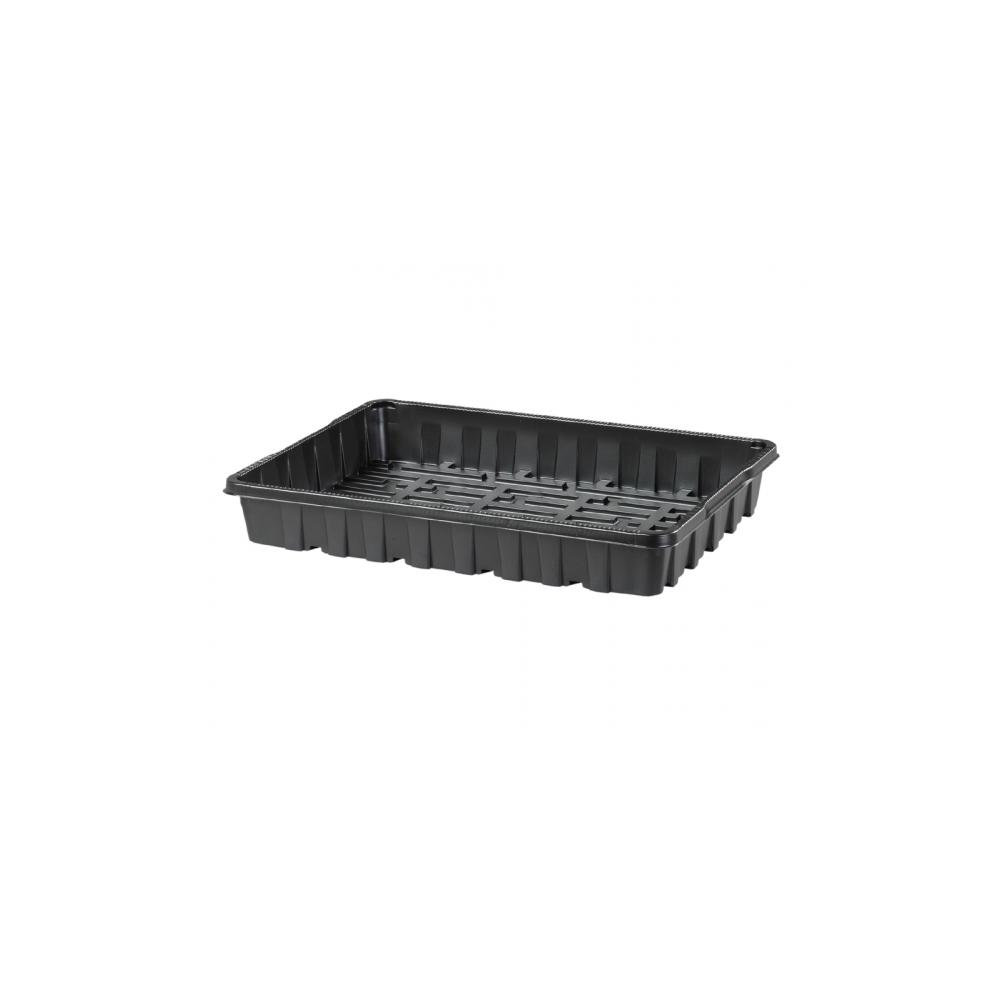
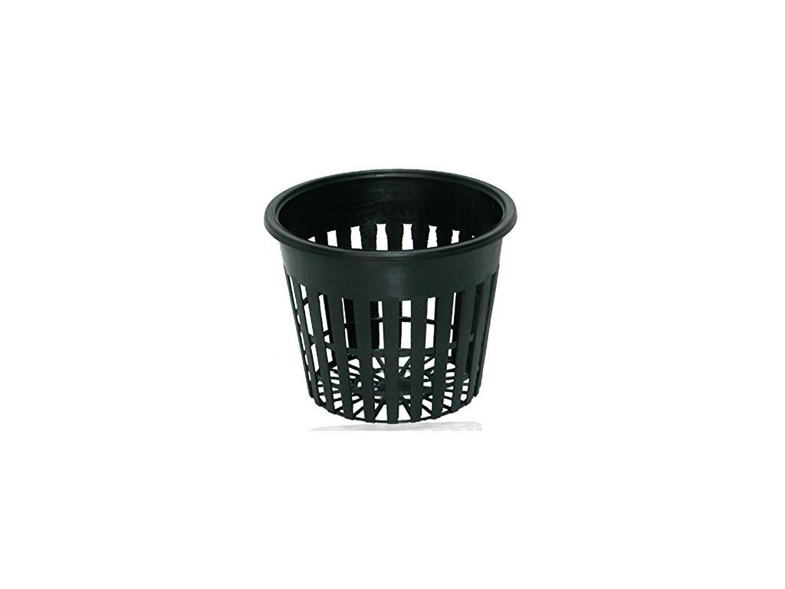
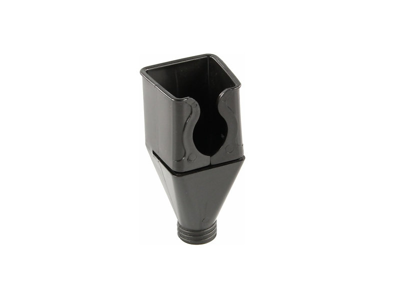
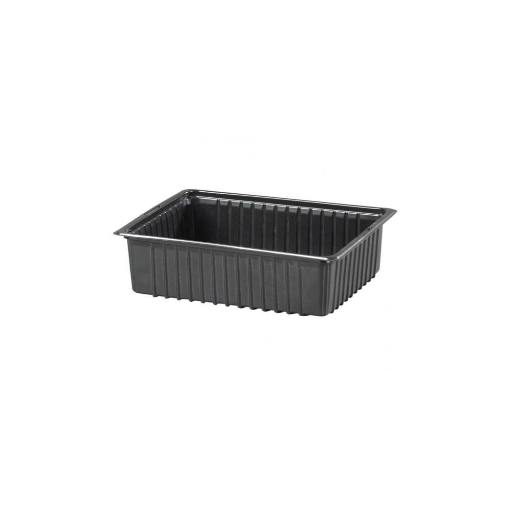
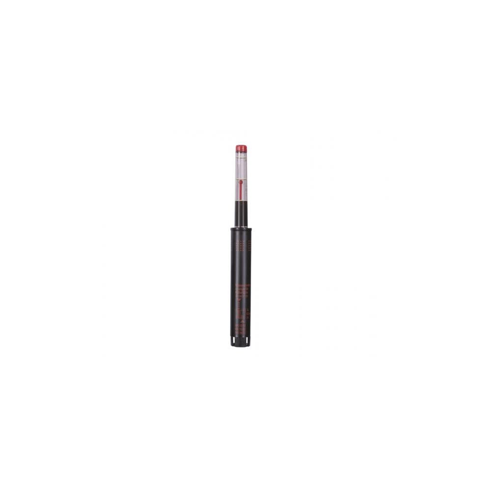

Miska výsevná černá
Výsevná miska vhodná pro pěstování bylin a microgreens v zemině a v substrátu. Optimální rozměr pro umístění do pěstebního boxu 400x300 mm.

Hydroponický košík
Speciální hydroponický a aeroponický košík s dírami zajistí dokonalý vývoj a perfektní vyživování kořenů. Malý hydroponický květináč o průměru 5 cm.

Nalévací hrdlo
Plastové hrdlo pro snadné plnění hydroponického roztoku do pěstebního boxu 400x300mm.

Miska výsevná černá 19x14cm
Výsevná miska vhodná pro pěstování bylin a microgreens v zemině a v substrátu. Optimální rozměr pro umístění do výsevné misky 390x290mm (4ks).

Vodoznak II/12/LE červený
Vodoznak je určen ke snadnému určení zálivky při hydroponickém pěstování. Rysky minimum, optimum a maximum jsou vyznačeny na ukazateli výšky hladiny.